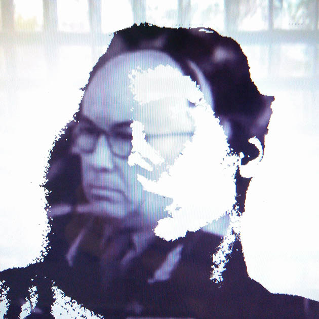
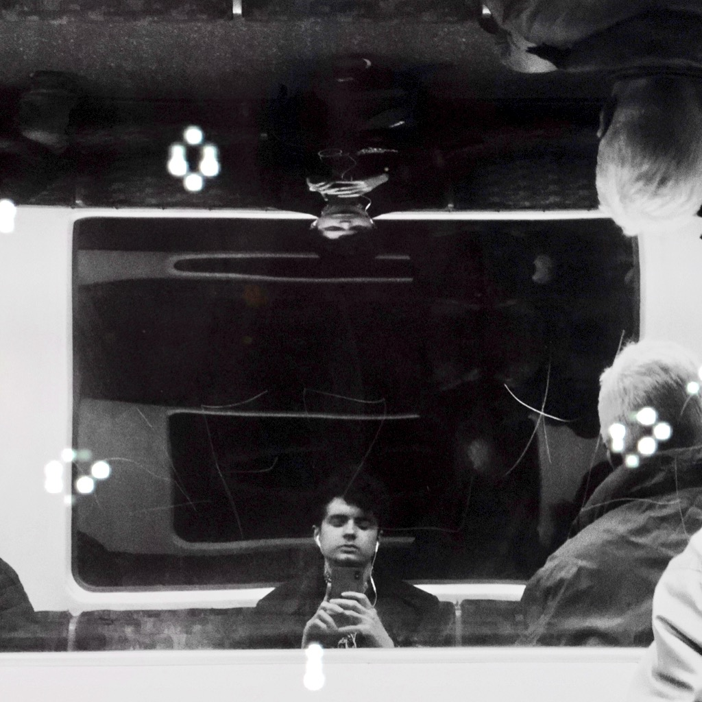
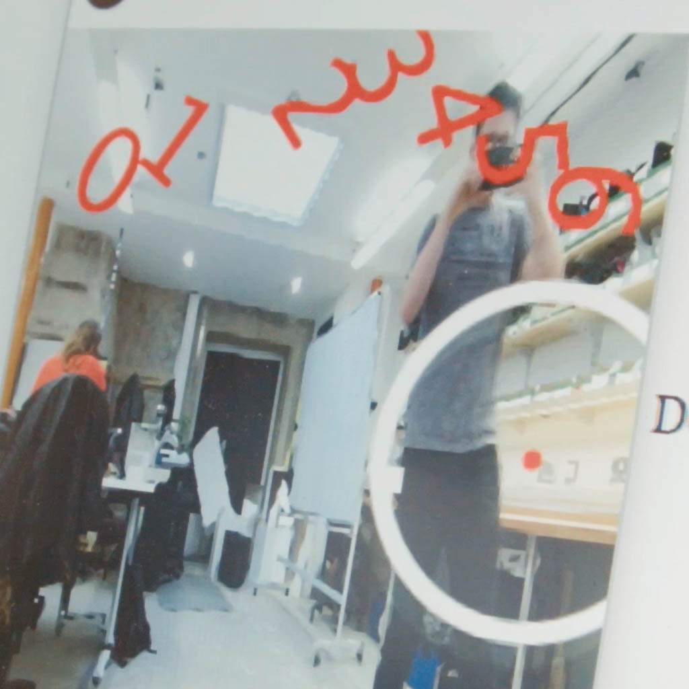
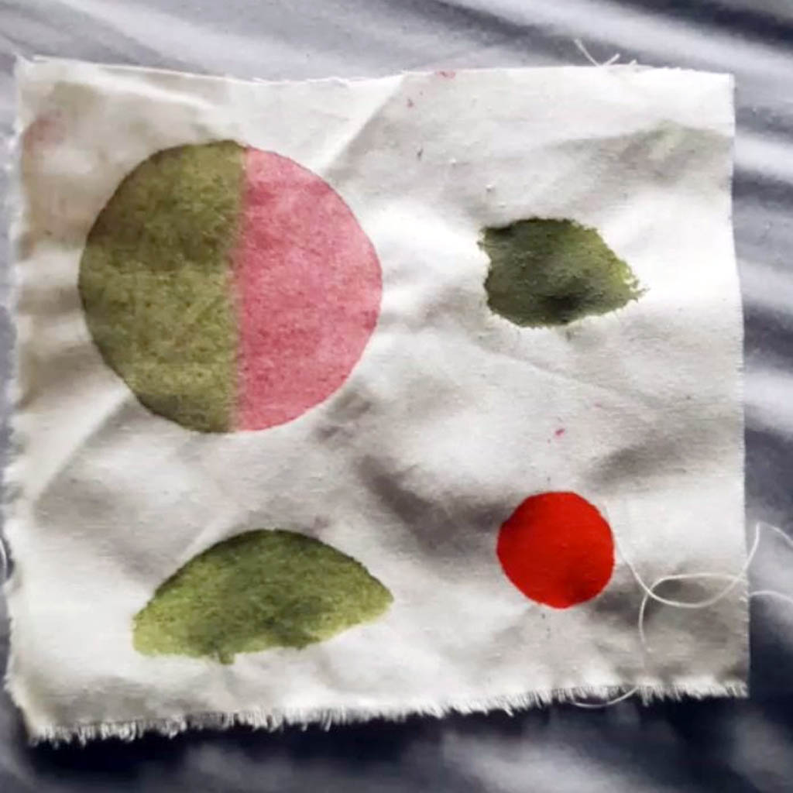
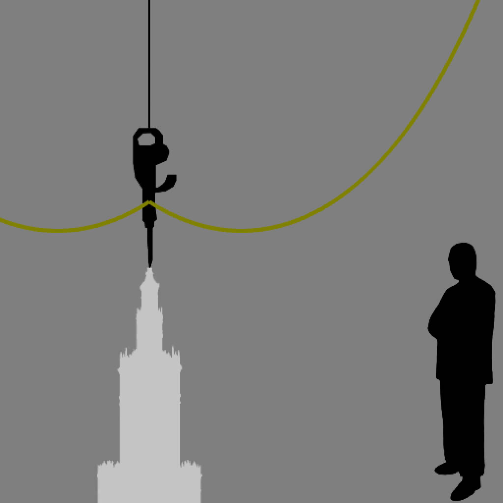

Come celebrate the “beginning of the end” or the “end of the beginning” during Goldsmiths, University of London's Digital Arts Computing degree show. 30+ computational artists exhibit their latest artwork during the Exit Strategy degree show, with artworks exploring important topics, enhanced through the medium of interactivity, sound and electronics.
Question the vastly influential nature of our internet-driven lives and what effect this may have on our future generations. Will the increased popularity of the term “fake news” alongside the erosion of privacy and accountability lead to the potential for the wide spread of miss-information, manipulating the youth? Learn about the life stories of people who lived throughout the reign of the Soviet Union-era. What was life was like during a time where freedom seemed limited? Including the potential irony-laced concept of “freedom”. Finally, explore the unusual connection between human touch, electronics and softness in an interactive piece that uses heating pads and thermochromatic ink to create a sense of bodily contact. Emphasising the importance of being aware of one's interaction with the materials around us and the need to have one's body and person confirmed in relation to these materials.
Explore these artworks alongside 20 others during the “Exit Strategy” show Thursday May 3rd - Monday May 7th at St James Hatcham, Goldsmiths.
-
Kotryna Sajeviciute
Kotryna will be exhibiting a piece that shares life stories of people who lived through the Soviet Union. The varying stories of the past chase Soviet Union residents who reside as shadows today. It reflects the similarities with current life and the irony of freedom. Visitors will be able to become a part of the digital projection in this highly immersive piece.
-
Joe McAlister
Joe is a London based computational artist and privacy advocate. Typically focusing on 'metadata' and the surprising details it can often reveal about the user. His work uses a mixture of programming, AI, machine learning and traditional art mediums including sculpture. He will be exhibiting "jo-jo" a comment on the growing "internet-centric" lifestyle that has influence on our thoughts, actions and behaviour. See more
-
Maria Loks-Thompson
Maria Loks-Thompson is a Polish born digital artist. Her work is strongly informed by the political aspects of the personal space.
Present Tense is a virtual, six channel video installation that explores the relationship between the systems of control and the mental health crisis present within the contemporary western societies.
-
Robert Hall
Robert's work deals broadly with data/memory/information, specifically similarities and differences between how machines and humans deal with these concepts.
For this project Robert has created a fleet of machines that invade the social space of a workplace in a manner reminiscent of a hostile takeover. They converse naturally but stop and stare at any human who might overhear their conversation. See more
-
Johanna de Verdier
Johanna's piece explores the connection between human touch, electronics and softness. It takes its form as an embroidered and touch sensitive blanket, using heating pads and thermochromatic ink to create a sense of bodily contact. It emphasizes the importance of being aware of one's interaction with the materials around us and the need to have one's body and person confirmed in relation to these materials.
-
Pawel Dziadur
Pawel Dziadur is a multi-disciplinary artist based in London. From experimental music, performance, sculpture and technological art installations his practice tends to juggle joke, seriousness, and critical commitment. His recent series of work interrogates the processes and relationships of labour. Industrialisation was founded on slavery, however, labour is also assessed as an interplay with how we define our individual authenticity and that of social relations.
-

-
Opening times:
Opening Night (Thursday May 3rd 2018): 17:30 - 21:30
Friday May 4th 2018 - Monday May 7th: 12:00 - 17:00
Curators event (panel discussion): Saturday May 5th 2018 15:00
-

-
Tickets:
Opening Night:
No booking required for 4th-7th
Where?
-
Tube:
New Cross Gate (Zone 2)
Rail:
New Cross Gate (2 mins walk)
New Cross (4 mins walk) -
Address:
St James Hatcham Church,
Goldsmiths, University of London,
SE14 6AD
-

-
Social Media:
Feel free to follow and share our event on Facebook.
-

-
Press:
Any questions, please send me an email at joe(at)joe.ac.